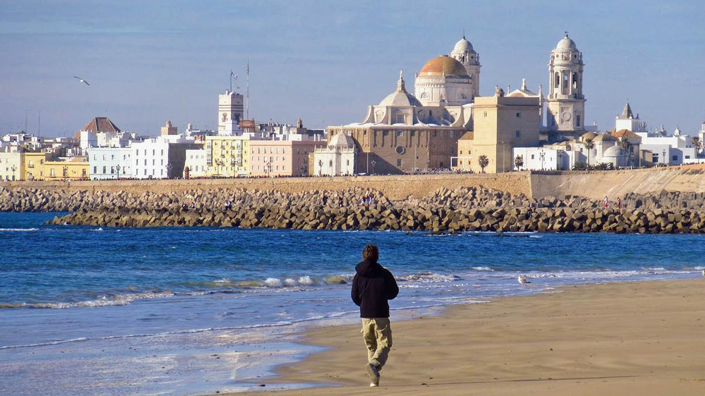

GUÍA DE ESTILO OFICINA DE TURISMO CÁDIZ
Público Objetivo
Turistas Potenciales:
Viajeros interesados en visitar la región, ya sea por razones de ocio, negocios, eventos culturales, etc. Este grupo puede incluir turistas nacionales e internacionales.Empresas y Organizadores de Eventos:
Aquellas empresas que buscan lugares para conferencias, eventos corporativos, ferias comerciales, etc. La oficina de turismo puede ofrecer información sobre instalaciones, servicios y atracciones locales.Familias y Grupos:
Familias que buscan destinos familiares o grupos que planean viajes juntos. La oficina de turismo puede destacar actividades familiares, eventos y servicios adaptados a grupos.Estudiantes y Viajeros de Bajo Presupuesto:
Aquellos que buscan opciones de viaje más económicas. La oficina de turismo puede proporcionar información sobre alojamientos asequibles, transporte público y actividades gratuitas o de bajo costo.Tipo de Web
El sitio web de la Oficina de Turismo de Cádiz es una herramienta clave para atraer la atención de las personas a visitar Cádiz. Debe ser fácil de navegar, accesible y reflejar la identidad visual de la ciudad. También debe informar de todos los eventos y oportunidades que haya en la ciudad durante las semanas/mes actuales.
Utilizar fotografías representativas
Las imágenes pueden ser poderosas para transmitir la esencia de un lugar. Se pueden seleccionar fotografías de alta calidad que reflejen la belleza y la diversidad de Cádiz. Es importante asegurarse de que las fotografías utilizadas sean representativas de la ciudad y estén en armonía con la paleta de colores elegida. Aquí abajo hay unas imágenes de prueba:
